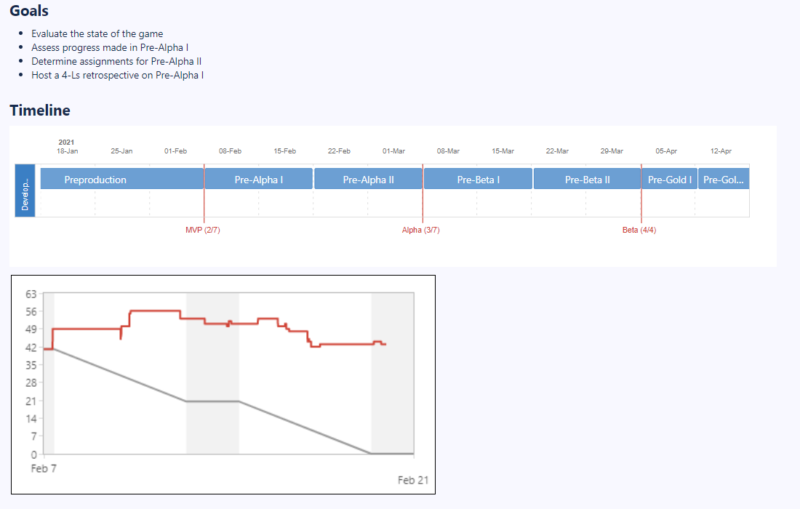
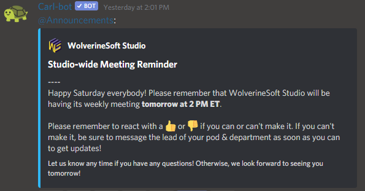
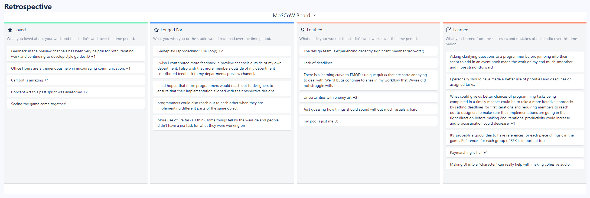

Studio-wide & Leads Meetings
For the first official week of production, much of the work I've done has been related to logistics and the overall transfer of information. This means that much of the work I did was managerial, and as a result, I did not directly touch the project repository.
Over the past 2 weeks, I've run 2 leads meetings, each on Saturdays. These have lasted approximately 2 hours each. I have also spent roughly 1 hour each on planning both of these leads meetings by writing an in-depth agenda through Confluence. An header of one meeting document can be seen, pictured below. Most agendas share a similar header, which includes a list of goals for the meeting, a general studio timeline reminder, and a burndown chart for the current sprint.
Over the past 2 weeks, I've also run 3 studio-wide meetings. I've also monitored the discussion of the department and pod meetings that continue after the end of the studio-wide segment. Other than the act of speaking at and attending these meetings, they also take several hours to plan. For each meeting, I record, edit, and upload a 2-4 minute video showcasing project progress. An example of one such video can be seen below. These meetings are recorded both for the sake of keeping members updated on project progress, as well as for the sake of posterity.
Each meeting also warrants its own individual set of slides, which include general announcements, reminders, and a showcase section that highlights member contributions. An example of a slide deck from the past 2 weeks (the eve of Pre-Alpha II, specifically) can be seen below.
Server Maintenance, Communications, & Logistics
Over Pre-Alpha I, I also spent quite a bit of time configuring server bots to automate simple tasks. Among these include setting automatic studio and leads meeting reminders through Carl-bot. An example announcement can be seen below.
I also installed several Macros to our Confluence server, including one that makes for an easier 4-Ls Retrospective. Just for reference, 4-Ls retrospectives involve the team reflecting over the things they Loved, Longed for, Loathed, and Learned over a certain period of time (for us, over a sprint, or over a week). After receiving feedback about the value of retrospectives several times from past leads and members, I will now be dedicating around 5-10 minutes at the end of every meeting to retrospectives. An example retrospective from a leads meeting during Pre-Alpha I can be seen below.
Over the Pre-Alpha I sprint, I have also been communicating with Matt Stone, a potential industry advisor. I have set up a meeting between him and the rest of the studio leads, during which he has kindly offered to give advice on our overall studio structure and progress. I've also reached out to and set up meetings with past studio leads, including Nico Williams and Matt Rader, for advice on the current structure of the studio. The specific topic of these meetings will involve discussing the state of the Design department, as well as how we can more effectively communicate design decisions, information, and updates to the rest of the studio.
Another adventure that took place over Pre-Alpha I was the purchase of multiple 3D Unity Store asset packs with a University of Michigan P-card with the help of Mariah Fiumara and Kate Killewald from the College of Engineering Office of Student Affairs. This process took place over several meetings due to technical issues. However, we were ultimately able to successfully purchase a 3D Creatures & Animations pack, as well as a 3D Diesel Punk Parts pack, which will speed up our art pipelines very effectively. These are projected to be imported into the project early in Pre-Alpha II. A preview video of the 3D Creatures & Animations pack can be seen below - it will look awesome in Project Cloud, and many more studio projects to come!